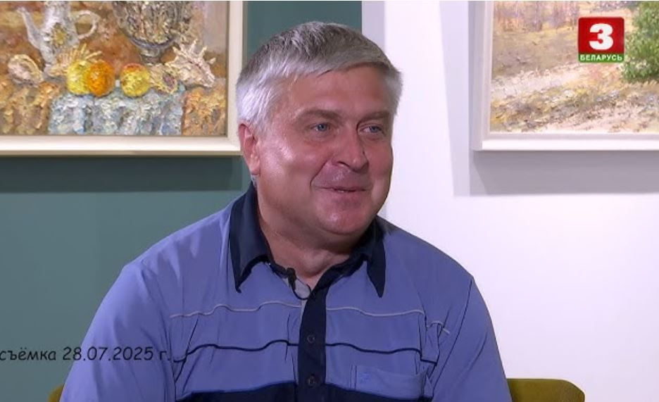

1998 год
Начало активного участия в городских, республиканских и международных выставках и пленэрах.
Дмитрий Мшар: Жизнь и Творческий Путь
Дмитрий Георгиевич Мшар родился 5 марта 1976 года в деревне Стригинь Брестской области. Получил художественное образование в Витебском государственном университете имени Машерова, а позднее — второе высшее по культурологии в БГУ в 2008 году. Его педагогическая деятельность началась в 2000 году в Витебске, а с 2003 года он переехал в Минск, где преподавал во Дворце детей и молодежи «Золок» и в Детской школе искусств №1 до самой смерти.

Дмитрий Мшар
Дмитрий Георгиевич Мшар родился 5 марта 1976 года в деревне Стригинь Брестской области. Получил художественное образование в Витебском государственном университете имени Машерова, а позднее — второе высшее по культурологии в БГУ в 2008 году. Его педагогическая деятельность началась в 2000 году в Витебске, а с 2003 года он переехал в Минск, где преподавал во Дворце детей и молодежи «Золок» и в Детской школе искусств №1 до самой смерти.
Важные вехи
Начало активного участия в городских, республиканских и международных выставках и пленэрах.
Включая "Городские краевиды", "Натюрморт", "Дыхание природы", и значимую серию акварелей "Храмы Беларуси".
Скоропостижная смерть в возрасте 49 лет. После этого была организована передвижная выставка «Здесь моя душа» (проект «Пан Тон»), раскрывающая основные вехи его творчества.
Работы художника хранятся в Художественном музее Витебска, музее Марка Шагала, Военно-историческом музее Лиозна, в галерейных собраниях «Артхаус», «Аристократ», «Концепция Минск», а также в частных коллекциях.
🌸
Выставка, открывшаяся 5 марта, в день, когда Дмитрию Мшару исполнилось бы 50 лет, приурочена к Международному женскому дню. Это символичный подарок всем женщинам, как отметила его супруга, Екатерина Николаевна Артеменок, доцент кафедры педагогики БГПУ.
«Женщина – это символ создания, созидания. Женщина – это символ творца и красоты. И женщинам дарят цветы. Все женщины разные, и они все по-своему красивы. И все цветы очень разные, как на этих картинах. И они все по-своему красивы. Поэтому, видимо, на 8 марта принято дарить цветы. И эта выставка от Дмитрия – подарок всем женщинам. Всем абсолютно. Он очень уважал женщин, а женщины любили его».
На выставке представлены разнообразные цветочные мотивы: от шикарных роз до скромных полевых ромашек и бархатцев, от долговечных комнатных растений до цветов, цветущих всего пару дней. Каждая работа наполнена буйством цвета и красок, отражая философский смысл существования даже увядающих цветов.
❤️
Коллеги и друзья Дмитрия Мшара делятся воспоминаниями о нем как о человеке удивительной доброты, скромности и неиссякаемой энергии. Татьяна Юрьевна Шуляк, и.о. директора ДШИ №1, подчеркнула, что работы Дмитрия Георгиевича наполняют теплом и умиротворением, подтверждая его большой талант художника и преподавателя.
Жанна Валерьевна, бывший директор школы, отметила, что Дмитрий был очень скромным человеком, и многие даже не подозревали о масштабе его таланта при жизни. Она подчеркнула, что его творчество останется на века, а выставка — это не «вопреки», а «потому что жизнь продолжается».
Светлана Антоновна Малько, заведующая художественным отделением, отметила, что работы Дмитрия Мшара «дышат позитивом», не имеют темных и грустных тонов, что свидетельствует о его постоянном поиске вдохновения и радости. Юрий Николаевич Козин, коллега и заведующий художественным отделением, добавил, что картины художника «светоносные», излучают любовь к жизни.
«Человек жив, пока его помнят. А у художника, тем более у такого художника, как Дмитрий Георгиевич, есть преференции. В этом плане тут не просто помнят, а говорят и будут говорить, и будут передавать из уст в уста и творчество, которое остается на века».
Друзья семьи, такие как Валентина Владимировна Пунько и Вероника Николаевна Пунчик, рассказали о Дмитрии как о талантливом человеке во всем — от игры на баяне до глубокого понимания искусства.
Валентина Владимировна Пунько отметила, что Дмитрий любил жизнь, дорожил семьей, заботился о матери, брате и своих близких. Она подчеркнула, что память о нем сохранится только светлой и доброй, потому что именно таким он остался в сердцах людей.
«Мы будем помнить его только доброе, только светлое, только нежное и никогда, конечно, не будем забывать о том, что мы его любили, любим и будем любить».
Вероника Николаевна Пунчик, друг семьи, профессор кафедры молодежной политики и социокультурных коммуникаций Республиканского института высшей школы, говорила о Дмитрии как о человеке-вселенной, соприкосновение с которым делало жизнь богаче. Она отметила, что знакомство с семьей художника открыло для нее новый мир смыслов, красок и взглядов на жизнь.
По словам Вероники Николаевны, после ухода Дмитрия особенно ярко стало видно, какое богатое духовное и творческое пространство он оставил после себя. Она также призвала ценить близких людей не только внутренне, но и подтверждать это поступками.
«Тот фон, который оставил после себя Дмитрий, это фон невероятно обогащенный, невероятно яркий и просто кристально выраженный».
«Ценить в душе и выражать это в поступках».
🖼️
Михаил Федорович Крот, друг и коллега, отметил многогранность Дмитрия как личности и художника. Он восхищается его техникой: «он никогда не жалел красок. Редкость нынешних художников. Он просто брал кистью, мастихином, чистенько, без грязи». Он также подчеркнул, что Дмитрий практически не использовал чистые коричневые цвета, добиваясь легкости даже в грубых фактурах.
Сам Дмитрий Мшар в интервью телеканалу «Беларусь-3» говорил, что каждая работа для него — новое задание, не рутина. Он мог делать несколько работ с одной точки, меняя освещение или время суток, чтобы поймать окончательный образ. Иногда работа писалась быстро, а иногда могла ждать годами, пока художник не почувствует, что нужно исправить.
Лилии Николаевне Тимашковой, доценту кафедры педагогики, картины Дмитрия раскрывают его как человека с множеством граней, способного передать тончайшие чувства. Она отметила, что в его работах нет черных красок, они всегда светятся радостью и положительной энергией. Особое внимание она уделила его умению писать травы, которые даже зимой могли быть изображены в ярких оранжево-красных тонах, передавая боль и трепет.
«Я смотрю на картины и вижу совершенно другого человека. Одно дело, когда это были сельские пейзажи, там он совсем другой, тоскующий по земле, по малой родине. И здесь это человек, который имеет столько граней и чувствования жизни в этих красках, в этой нежности».
👨👩👧👦
Мать художника, Валентина Михайловна, выразила глубокую благодарность всем присутствующим за память о сыне, подчеркнув, что для нее это очень важно. Она отметила, что Дмитрий любил людей, свою семью, своих дочерей и мать. Его душа, по ее словам, живет в его картинах, передавая частичку своего сердца и души всем зрителям.
Несмотря на скорбь, Валентина Михайловна нашла в себе силы поблагодарить всех за организацию выставки и пригласить на родину Дмитрия — в деревню Стрегинь, где, по ее словам, он будет рад встрече. Она также поздравила всех женщин с наступающим праздником, пожелав здоровья, радости и счастья.
Екатерина Николаевна Артеменок, супруга Дмитрия, прочитала стихотворение-аннотацию, посвященное мужу, которое появилось в невыносимые дни после его ухода. Она отметила, что многие женщины после посещения выставок Дмитрия вдохновляются на написание собственных стихов.
«Цветок, подаренный с особым чувством,
Цветок, написанный с любовью и теплом.
Цветы художника, мозаика искусства,
Разноголосье цвета и мазков.»
Она выразила надежду, что выставка в библиотеке позволит детям вдохновиться его работами и, возможно, кто-то из них тоже станет художником или просто будет делать «красивые дела и красивые поступки в своей жизни».
🚀 Чек-лист: Прикосновение к искусству
Найдите информацию о его жизни и других выставках.
Попробуйте найти "философский смысл" даже в увядающих цветах, как говорила его супруга.
Посмотрите фильм «Я художник? Я так вижу», чтобы услышать его мысли о творчестве.
Поищите в работах художника "светоносность", отсутствие темных тонов и его уникальное использование красок.
Вспомните, как Дмитрий Мшар вдохновлял своих учеников и как важно поддерживать таланты.
Вспомните слова о том, как важно ценить людей рядом и выражать это в поступках.